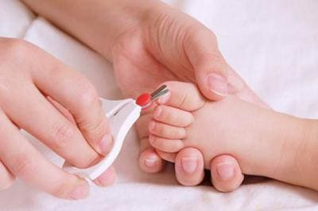
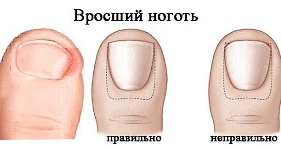

Даже у ногтей на ногах есть болезнь роста. Если у вас когда-либо был вросший ноготь, вы знаете, что это может быть довольно болезненно, кроме того, от него довольно тяжело избавиться.
В большинстве случаев врастание ногтя наблюдается на большом пальбе ноги. Иногда может врасти ноготь на большом или любом другом пальце рук. Внешние края ногтя прорастают внутрь под кожу. Со временем может привести к нарушению остального кожного барьера, который не позволяет развиваться инфекции. Место, где ноготь врастает, может постепенно воспаляться, по мере того как бактерии заселяют мягкие ткани под кожей. Если с этой пробой не бороться, инфекция могут усугубиться, что приведет к осложнениям, как образование абцесса или флегмоны. При врастании ногтя у ребенка могут быть следующие симптомы: покраснение, боль опухание по бокам от ногтя.
ЛЕЧЕНИЕ
Лечение вросшего ногтя зависит от степени тяжести:
• несколько раз в день отмачивайте палец в теплой воде;
• носите сандалии или туфли с открытым носком;
• ваш врач может попытаться аккуратно приподнять края ногтя, чтобы не дать ему врасти еще больше. Он может порекомендовать вам делать то же самое дома;
• возможно, ваш врач выпишет пероральный антибиотик в дополнение к этому лечению, чтобы предотвратить распространение инфекции;
• если описанного выше лечения окажется недостаточно, ваш врач может решить полностью или частично удалить ноготь. Как правило, это делается после введения в палец анестетика, чтобы процедура была безболезненной. Если анестезию сделать правильно, боль будет намного меньше или пациент совсем не будет чувствовать ее во время процедуры. Затем врач хирургическими щипцами поднимет ноготь из его ложа и ножницами обрежет часть ногтя. Оставшаяся часть ногтя может отпасть, а может и остаться, но не беспокойтесь! Ноготь отрастет! Так происходит практически всегда после лечения вросшего ногтя.

ПРОФИЛАКТИКА
• Не покупайте тесную обувь и убедитесь, что обувь не мала вашему ребенку.
• Избегайте ношения обуви с зауженным носиком, например, туфель на каблуках и вечерних туфель. Если пальцы постоянно стиснуты в слишком узком пространстве, риск врастания ногтя увеличивается.
• Пусть ребенок носит туфли с открытым носком или сандалии как можно чаще и пока это безопасно.
СОВЕТ ДОКТОРОВ СИРС: ДЕЛАЙТЕ КВАДРАТНЫЙ СРЕЗ, А НЕ КРУГЛЫЙ Правильный уход за ногтями, особенно за ногтем на большом пальце ноги, очень важен. Старайтесь не срезать ноготь на большом пальце ноги в форме полумесяца. Подрезайте его прямо от одного края к другому, чтобы края ногтя росли над кожей, а не внутрь нее. Края ногтей, которые срезаны полукругом, с большей вероятностью будут загибаться вниз и врастут. |
Здоровье ребенка от докторов Сирс / Сирс У. и др.